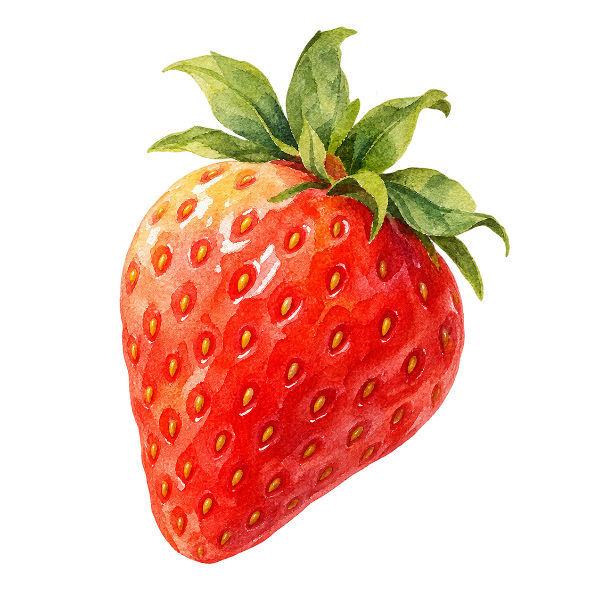
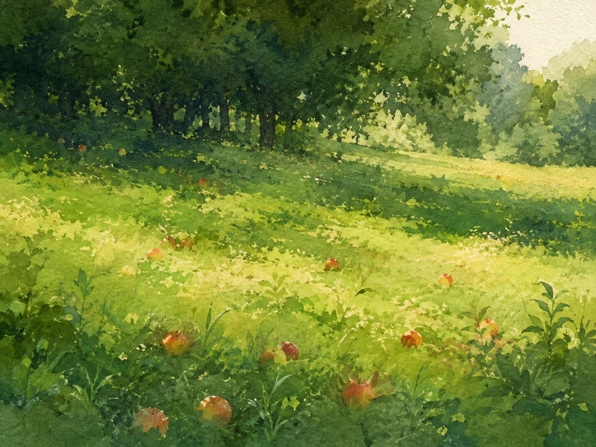
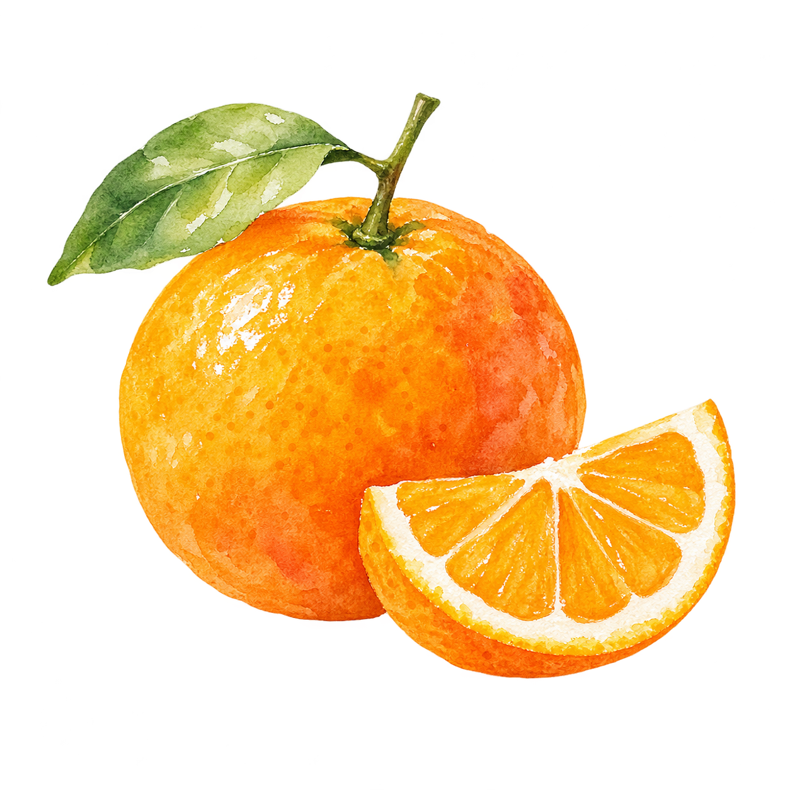
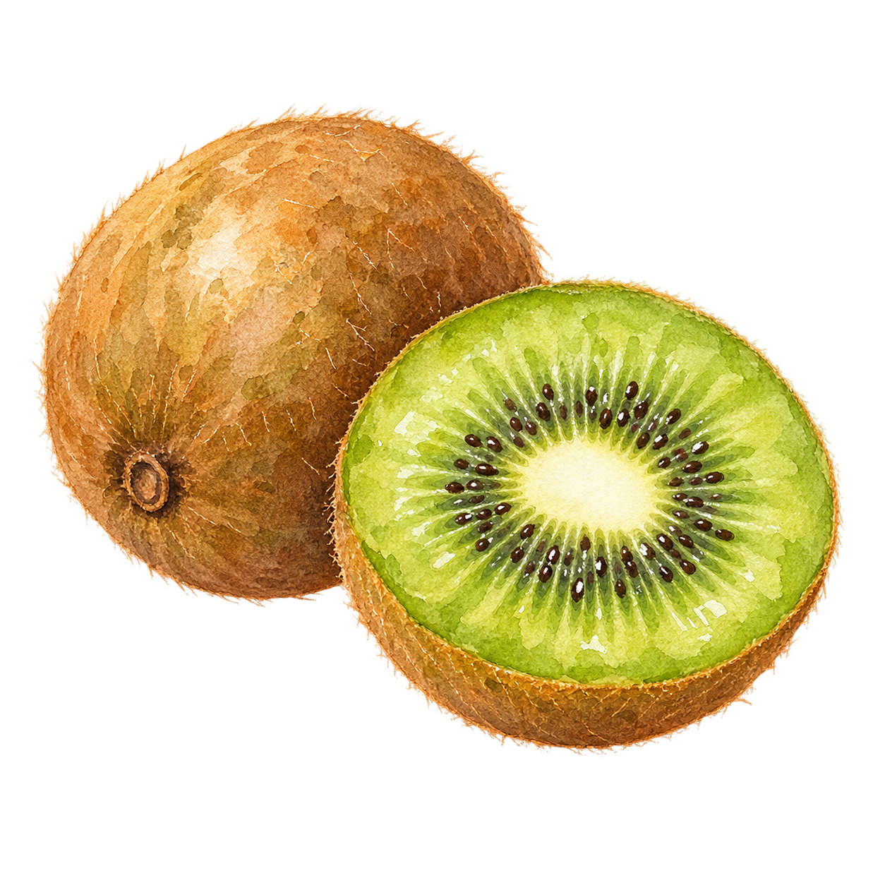
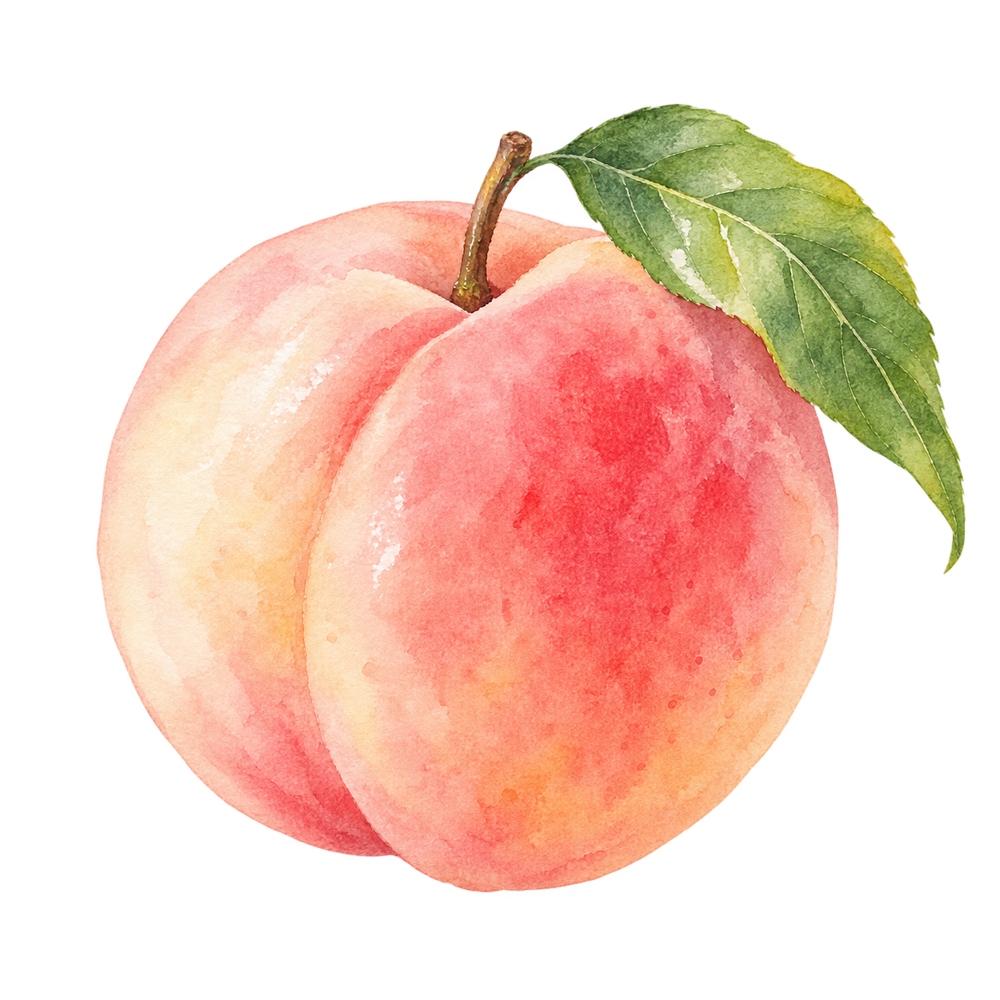
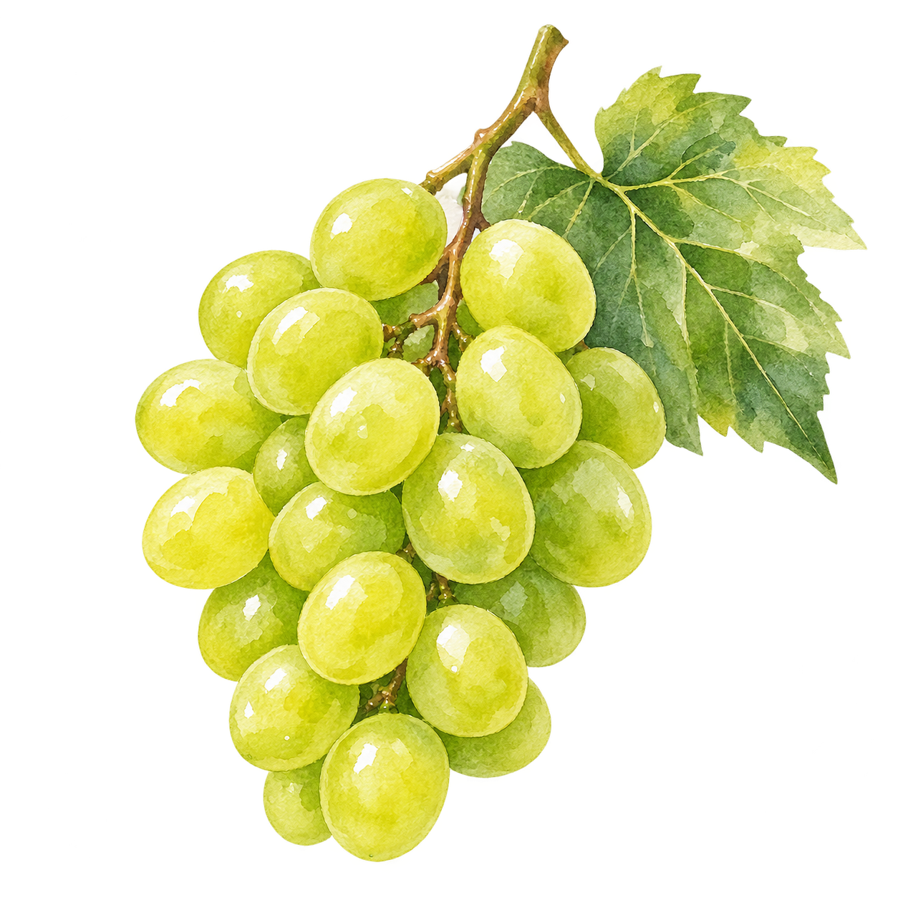
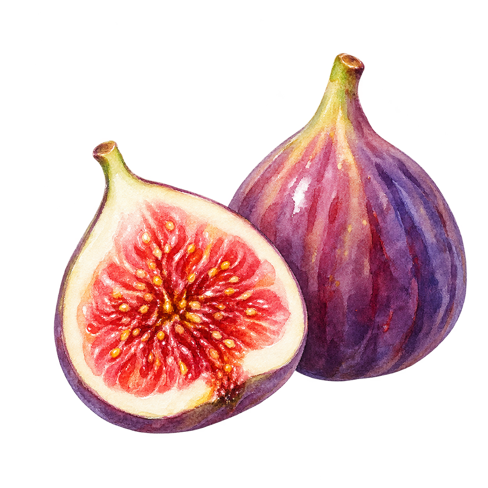
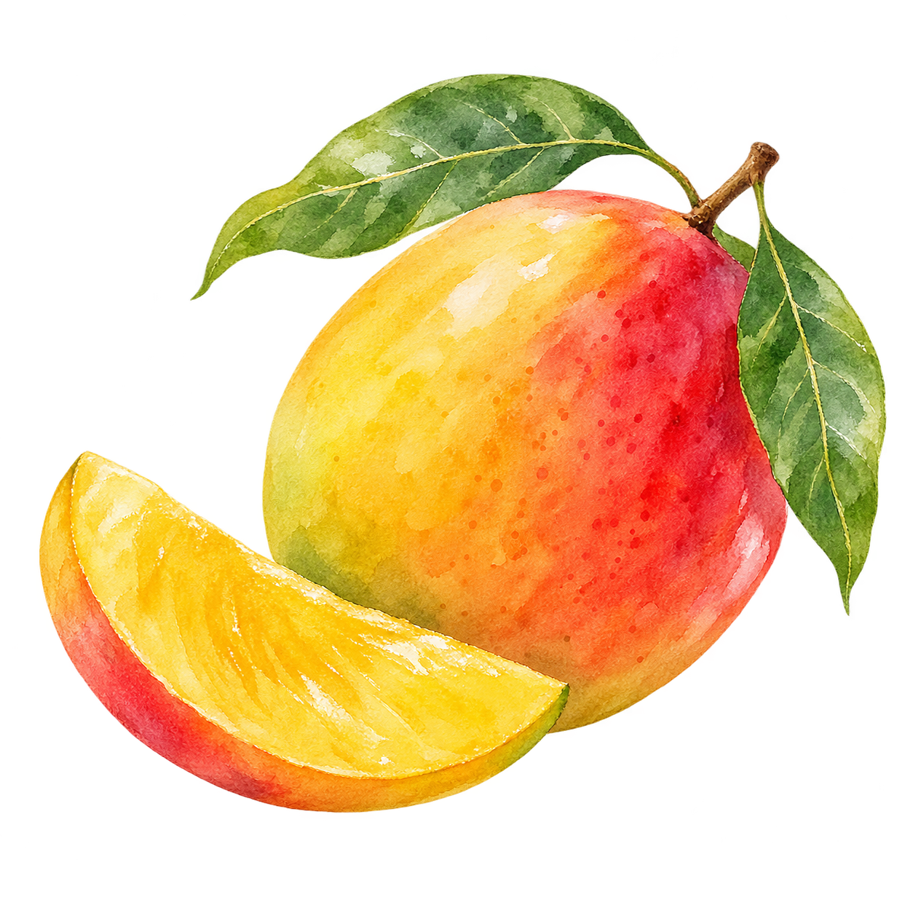
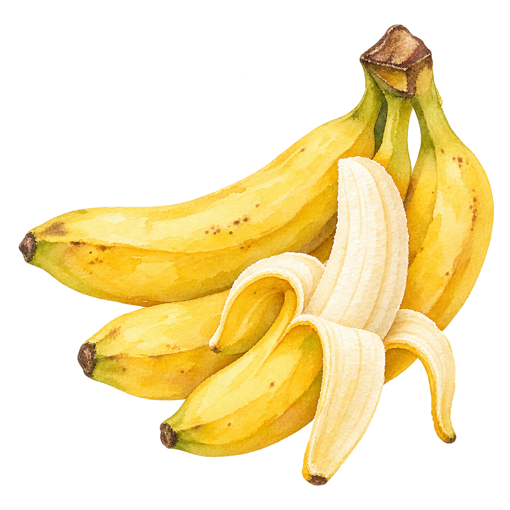

strawberry
딸기
향긋한 산미와 달콤함이 균형 잡힌 산도리의 대표 과일.
MORE →
산도리는 대구 종로의 테이크아웃 전문점입니다. 제철 과일의 가장 좋은 순간을 골라 산도, 모찌산도, 과일모찌에 담아냅니다. 이번 버전은 수채화처럼 번지는 자연의 분위기와 부드러운 과일 일러스트를 중심으로 정리했습니다.
SEASONAL FRUITS →
무엇이 가장 맛있는 과일인지 알고 싶었고, 그걸 어떻게, 언제 전해야 가장 좋을지도 계속 고민했습니다.
산도리는 좋은 과일을 고르고 기록하면서, 누구나 제철 과일을 가장 편하게 즐길 수 있는 방법을 생각하는 브랜드입니다.
매장 자체를 크게 보여주기보다, 과일과 계절의 인상을 먼저 전하고, 마지막에 테이크아웃 정보가 자연스럽게 이어지도록 구성했습니다.
Prefruit에서 좋았던 수채화 같은 감성과 자연 중심의 여백을 참고하되, 산도리답게 더 부드럽고 친근한 인상으로 다시 정리했습니다. 과일은 기하학 도형 대신 실제 수채화 일러스트를 사용해, 홈페이지 전체가 하나의 브랜드 북처럼 보이도록 구성했습니다.
기하학적인 도형 대신, 실제로 그린 듯한 수채화 과일 일러스트로 교체했습니다. 요청해준 대로 샤인머스켓, 애플망고, 바나나도 포함했습니다.

향긋한 산미와 달콤함이 균형 잡힌 산도리의 대표 과일.

밝고 경쾌한 색감과 과즙감을 더해주는 상큼한 계열의 과일.

산뜻한 산미와 선명한 단면이 인상적인 초록빛 포인트.

부드럽고 향긋한 여름의 인상을 담아주는 산도리의 계절 과일.

맑고 산뜻한 단맛과 톡톡한 식감이 살아 있는 초록 포도 계열.

은은하게 퍼지는 달콤함과 깊은 향이 매력적인 시즌 과일.

짙은 향과 부드러운 단맛으로 모찌와도 잘 어울리는 과일.

편안하고 익숙한 달콤함을 더해주는 부드러운 조합의 기본 과일.
우리는 테이크아웃 전문점이라 매장 사진을 크게 강조하지 않고, 과일과 계절의 분위기를 앞세웠습니다. 첫 화면부터 자연의 인상이 먼저 보이고, 마지막에 필요한 방문 정보가 정리되는 흐름으로 구성했습니다.
산도리 Sando.li
과일산도 · 점보모찌산도 · 과일모찌 / 테이크아웃 전문
대구광역시 중구 국채보상로 553 1층
금 · 토 · 일 · 월 12:00 - 16:00
재료 소진 시 조기 마감될 수 있습니다.